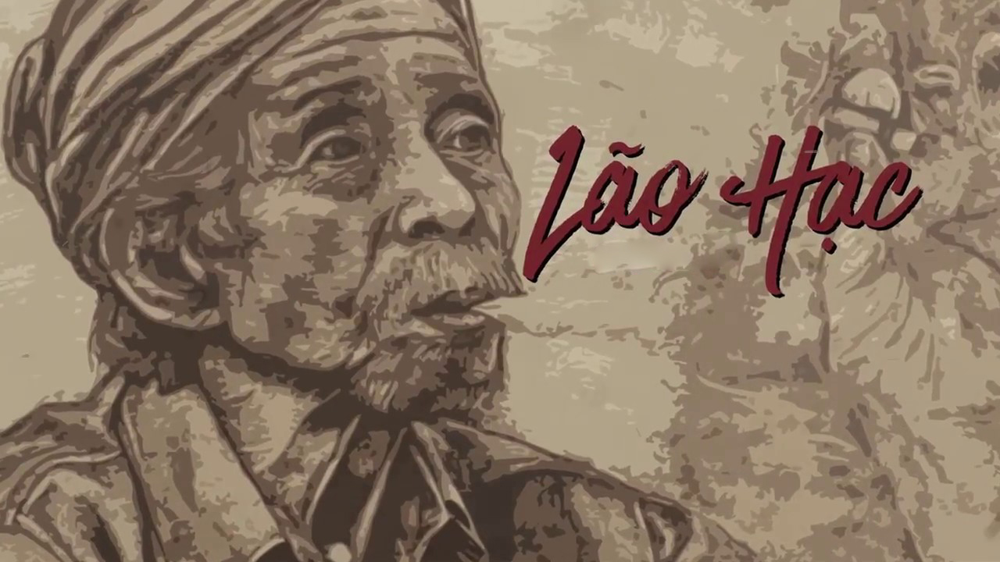

Thông tin tác phẩm
- Tác giả Nam Cao
- Thời kỳ Hiện thực phê phán
- Xuất bản 1943
- Thể loại Truyện ngắn

“Lão Hạc ơi! Lão hãy yên lòng mà nhắm mắt...”
“Không! Cuộc đời chưa hẳn đã đáng buồn, hay vẫn đáng buồn nhưng lại đáng buồn theo một nghĩa khác.
Tôi ở nhà binh Tư về được một lúc lâu thì thấy những tiếng nhốn nháo ở bên nhà lão Hạc...
Lão Hạc đang vật vã ở trên giường, đầu tóc rũ rượi, quần áo xộc xệch, hai mắt long sòng sọc.
Lão tru tréo, bọt mép sùi ra, khắp người chốc chốc lại bị giật mạnh một cái, nẩy lên.
Hai người đàn ông lực lưỡng phải ngồi đè lên người lão.
Lão vật vã đến hai giờ đồng hồ rồi mới chết.
Cái chết thật là dữ dội...
“Lão Hạc ơi! Lão hãy yên lòng mà nhắm mắt!
Lão đừng lo gì cho cái vườn của lão...”